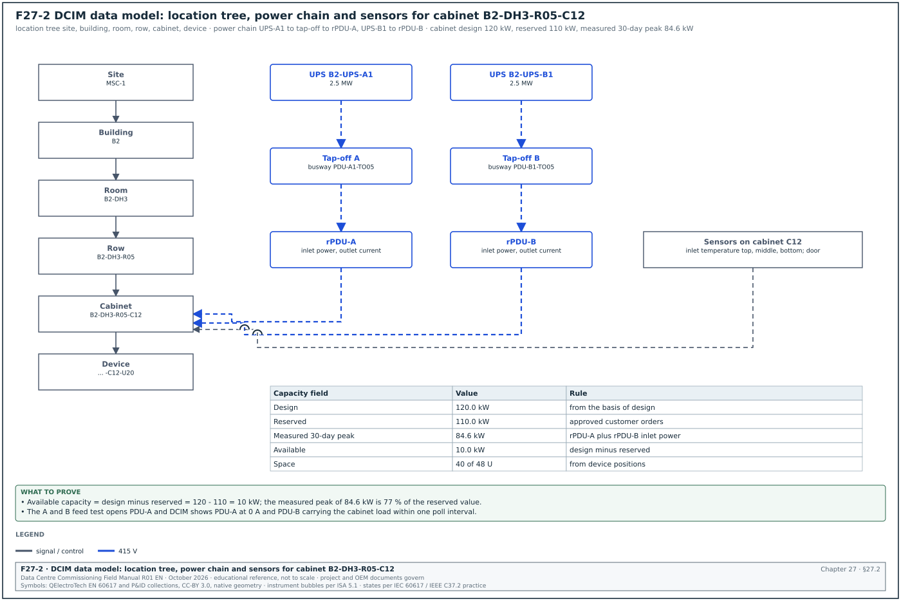
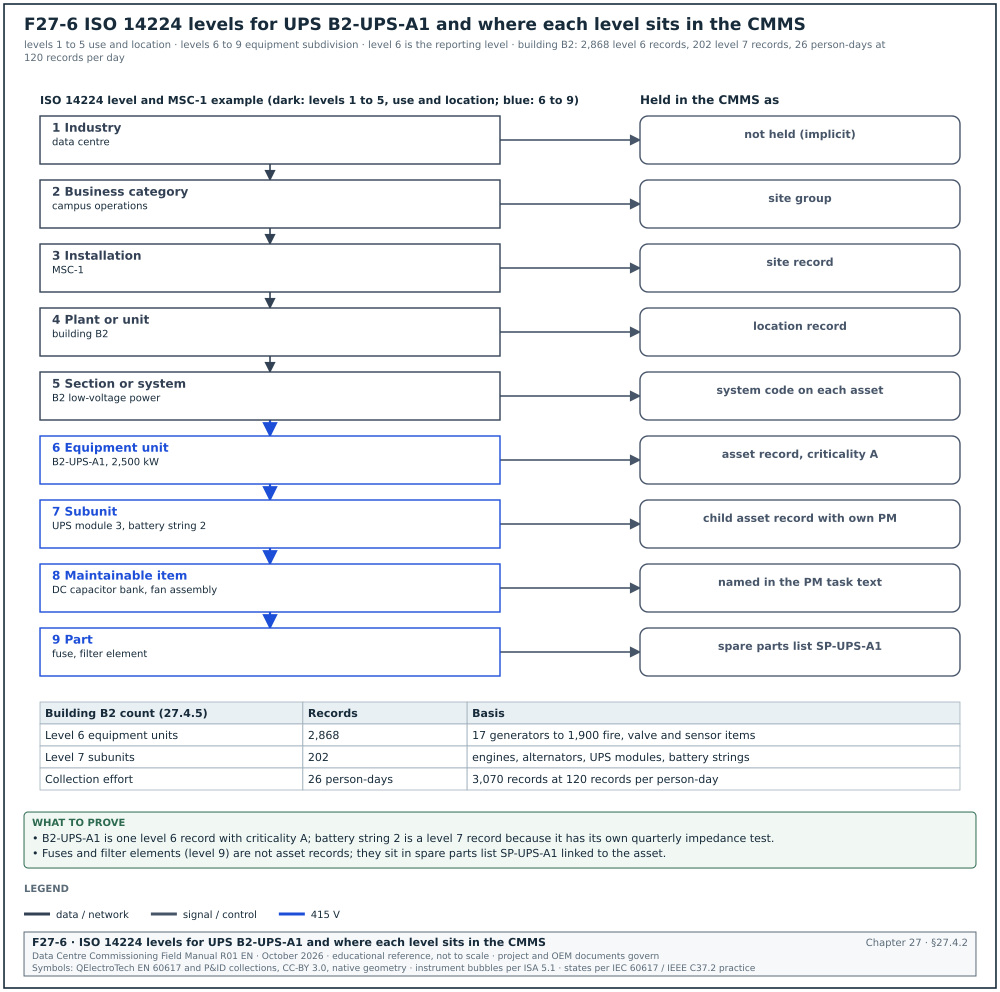
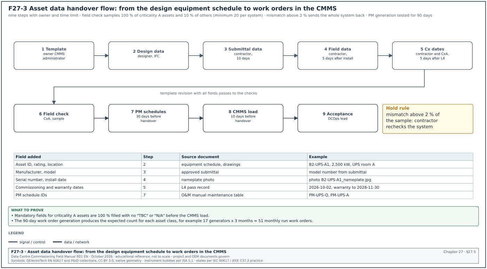
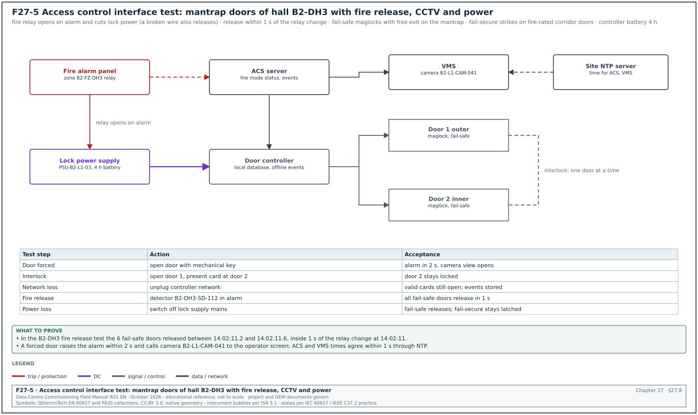
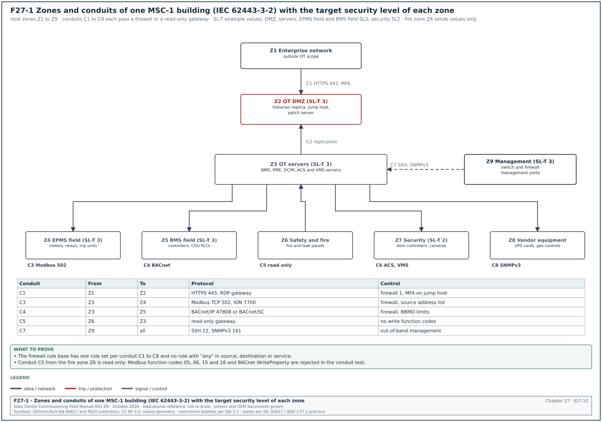
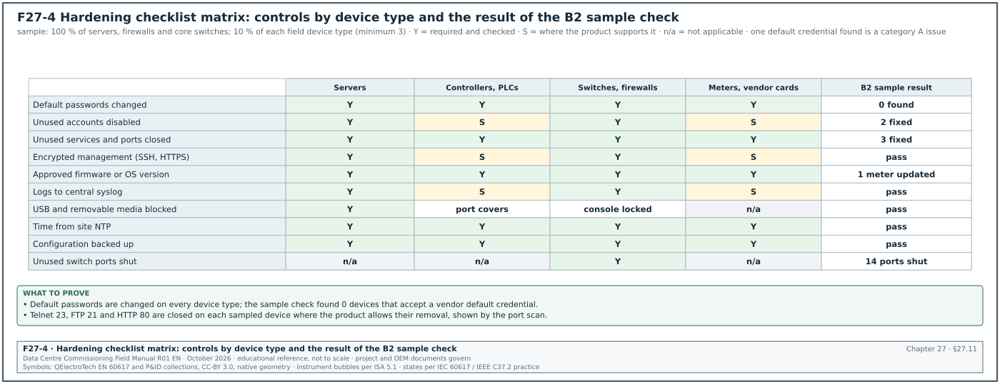
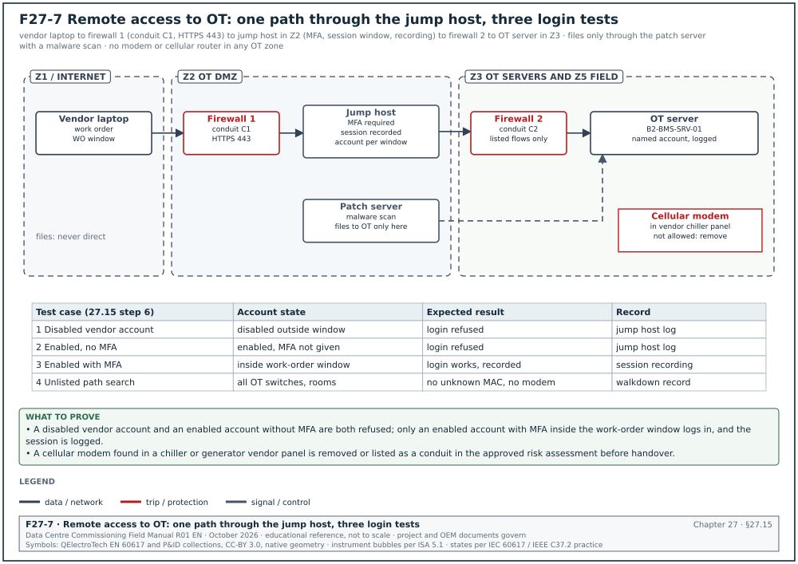

27.0Scope of this chapter
This chapter covers four systems that sit on top of the electrical, mechanical and controls systems of a data-centre campus. The data centre infrastructure management (DCIM) system holds the inventory of the white space and shows capacity. The computerised maintenance management system (CMMS) holds the asset register and the planned maintenance (PM) schedules that the operations team uses from the first day after handover. The physical security systems (access control, closed-circuit television (CCTV) and intrusion detection) control who enters which room. The operational technology (OT) cybersecurity programme protects the building management system (BMS), the electrical power monitoring system (EPMS) and every other control network from misuse.
- DCIM functions. What a DCIM system does, the data sources it reads, and the products in common use.
- DCIM data model. Sites, rooms, cabinets, devices, power chains, sensors and the relations between them.
- DCIM commissioning. The point-to-point verification of DCIM data against the field, with a worked example.
- CMMS asset register. The asset hierarchy based on ISO 14224, the asset data fields and the naming rules.
- Asset data handover. The flow from the equipment schedule to the CMMS, the PM schedules and the acceptance of the asset data.
- Access control. Readers, controllers, door types, fail-safe and fail-secure locking, and the fire alarm release.
- CCTV and intrusion detection. Camera coverage, recording, retention and alarm handling.
- Physical security tests. The door interlock test, the fire release test, the CCTV coverage test and the interface tests with the BMS and the fire alarm system.
- IEC 62443 and NIST SP 800-82. What each document requires and how they apply to a data-centre OT network. NIST is the National Institute of Standards and Technology (NIST).
- Zones, conduits and security levels. The zone model of an MSC-1 building, the conduit table and the target security level for each zone.
- Hardening. The hardening checklist for servers, workstations, controllers, switches and firewalls.
- Accounts, patching, backups and remote access. The account register, the patch process, the backup and restore test and the remote access path.
- Protocol security. BACnet Secure Connect (BACnet/SC), Modbus, Simple Network Management Protocol version 3 (SNMPv3) and the risks of each protocol.
- Cybersecurity acceptance. The tests, the records and the key performance indicators (KPIs) that close the scope.
Cybersecurity documents used: IEC 62443-2-1:2024 (security programme requirements for asset owners), IEC 62443-3-2:2020 (security risk assessment for system design), IEC 62443-3-3:2013 (system security requirements and security levels) and IEC 62443-4-2:2019 (component requirements). Also NIST SP 800-82 Rev. 3 (Guide to Operational Technology Security, September 2023) and the Cybersecurity and Infrastructure Security Agency (CISA) industrial control systems (ICS) advisories. Other documents used: ANSI/ASHRAE 135 (BACnet, Annex AB for BACnet/SC), ISO 14224:2016 (collection and exchange of reliability and maintenance data), ANSI/TIA-942-C (May 2024), NFPA 101 and NFPA 80 (life safety and fire doors), and the DCIM vendor help pages of Schneider Electric EcoStruxure IT.
27.1DCIM: purpose, functions and data sources
27.1.1What DCIM is
A DCIM system is a software platform that holds an accurate model of the physical data centre. The model holds every room, every cabinet, every device in every cabinet, every power connection from the utility to the rack power distribution unit (rPDU), and every sensor. It reads live values from the power and cooling equipment and compares them with the capacity of each part of the model. Before any installation, the operations team uses DCIM to find a position with free space, power and cooling.
The BMS holds the computer room air handler (CRAH) and coolant distribution unit (CDU) data, and the EPMS holds the switchboard and uninterruptible power supply (UPS) data. DCIM joins them with the cabinet, rPDU outlet and reserved-power data that neither system holds.
27.1.2DCIM functions
| Function | What it does | Data it needs | Who uses it |
|---|---|---|---|
| Asset inventory | holds every cabinet and device with position (rack unit) | cabinet layout, device list, serial numbers | operations, customer engineers |
| Power chain | models the path utility, transformer, switchboard, UPS, power distribution unit (PDU), rPDU, outlet | single-line diagram, panel schedules | capacity planner |
| Capacity management | compares design, reserved and measured load for space, power and cooling | ratings, live readings | capacity planner |
| Monitoring | reads live values and alarms from rPDU, UPS, sensors | Simple Network Management Protocol (SNMP), Modbus Transmission Control Protocol (TCP), BACnet or application programming interface (API) from BMS and EPMS | operations centre |
| Change management | records moves, adds and changes with work orders | change requests | operations |
| Environmental view | shows temperature and humidity per cabinet inlet | sensor positions and readings | operations, mechanical engineer |
| Reports | load per hall, power usage effectiveness (PUE) inputs, stranded capacity | all of the above | management |
27.1.3Data sources and protocols
DCIM reads data from devices directly or from the BMS and EPMS servers. The integration method is fixed in the interface control document (ICD) for the DCIM interface (chapter 25).
| Source | Typical protocol | Points read | Poll interval (example) |
|---|---|---|---|
| rPDU (intelligent) | SNMPv3 | outlet current, inlet power, energy, alarms | 60 s |
| UPS network management card | SNMPv3 or Modbus TCP | load %, battery time, alarms | 30 s |
| EPMS server (PME) | database view, Open Platform Communications Unified Architecture (OPC UA) or representational state transfer (REST) API | feeder power and energy per PDU | 300 s |
| BMS server | BACnet/IP read or API | CRAH supply air, CDU supply temperature, alarms | 60 s |
| Rack sensors | SNMP through a sensor hub | inlet temperature at top, middle, bottom; door state | 60 s |
| Asset scanner | barcode or radio-frequency identification (RFID) upload | asset tag, serial, position | on each audit |
The Schneider EcoStruxure IT Data Center Expert (DCE) help pages describe discovery processes for SNMPv1, SNMPv3, NetBotz appliances and Modbus TCP devices. A Modbus TCP discovery cannot be scheduled, and every third-party device needs a device definition file (DDF) before its sensors and alarms show correctly. For slow SNMP devices the vendor advice is to raise the timeout to 10 s and the retries to 5. The DCE discovery help lists no BACnet discovery process, and Schneider frequently asked questions (FAQ) page FA383264 states that BACnet is not supported (the FAQ names no version). The supported-device list in the release notes of the installed DCE version is the project record for this point. On MSC-1, BMS data reaches DCE through the BMS server API or a gateway, never by direct BACnet reads.
Other DCIM products in use on hyperscale and colocation sites include Nlyte, Sunbird dcTrack and Power IQ, and the Vertiv Environet and Trellis family. Confirm the features of each product against the vendor documentation for the release bought on the project.
27.1.4Where DCIM sits in the commissioning programme
| Stage | DCIM activity | Owner | Exit record |
|---|---|---|---|
| Design | DCIM data model agreed, naming convention approved | DCIM integrator, owner's data-centre operations (DCOps) lead | DCIM data model document DCIM-DM-01 |
| Construction | cabinet layout, power chain and asset list loaded from as-built drawings | DCIM integrator | DCIM load report |
| Level 3 (L3) | device integration tested per device type | DCIM integrator, BMS and EPMS contractors | DCIM device type test sheet |
| Level 4 (L4) | point-to-point verification of every monitored point | commissioning authority (CxA) witness | DCIM point-to-point log |
| Level 5 (L5) | DCIM shows the correct alarms and loads during integrated systems testing (IST) | CxA | IST script DCIM observations |
| Handover | DCIM accepted, accounts handed over, backup taken | DCOps lead | DCIM acceptance certificate |
27.2DCIM data model


27.2.1Objects and relations
Figure F27-2 shows the DCIM data model. Each object has a unique identifier, a parent, and a set of attributes. The power chain is a set of "feeds" relations from an upstream object to a downstream object.
| Object | Parent | Example identifier | Main attributes |
|---|---|---|---|
| Site | none | MSC-1 | address, time zone |
| Building | site | B2 | gross area, design IT load 36 MW |
| Room (data hall) | building | B2-DH3 | floor area, design IT load 12 MW, cooling type |
| Row | room | B2-DH3-R05 | number of cabinets, containment type |
| Cabinet | row | B2-DH3-R05-C12 | height 48U, rated power 120 kW, weight limit |
| Device | cabinet | B2-DH3-R05-C12-U20 | make, model, serial, rack unit, power draw |
| rPDU | cabinet | B2-DH3-R05-C12-PDU-A | inlet rating, outlet count, Internet Protocol (IP) address |
| Power panel or busway tap-off | room | B2-DH3-PDU-A1-TO05 | rating, upstream UPS |
| UPS | building | B2-UPS-A1 | rating 2.5 MW, module count |
| Sensor | cabinet or room | B2-DH3-R05-C12-TS-TOP | type, position, limits |
| CDU | room | B2-DH3-CDU-04 | rated 1.0 MW, loop served |
27.2.2Capacity fields
Each capacity object carries four values. DCIM compares them and reports stranded capacity, which is capacity that exists but cannot be used because another resource is full.
| Field | Type | Example (cabinet B2-DH3-R05-C12) | Rule |
|---|---|---|---|
| Design capacity | kW | 120.0 | from the basis of design (BOD) |
| Reserved capacity | kW | 110.0 | sum of approved customer orders |
| Measured peak (30 days) | kW | 84.6 | from rPDU inlet power |
| Available | kW | 10.0 | design minus reserved |
| Space used | U | 40 of 48 | from device positions |
| Cooling capacity share | kW | 120.0 | from CDU and CRAH allocation |
| Status | list | in service | planned, installed, in service, decommissioned |
Worked example: Capacity of row B2-DH3-R05. The row has 20 cabinets at the 120 kW rack design load of the MSC-1 worked example, so the row design is 2,400 kW. Customer orders reserve 2,180 kW. The 30-day measured peak is 1,712 kW, which is 78.5 % of the reserved value. The available capacity is 2,400 − 2,180 = 220 kW. Three cabinets have 16 U empty each but only 4 kW unreserved power each: their space is stranded. DCIM reports 48 U of stranded space and 0 kW of stranded power for the row. The capacity planner uses this report to place the next devices of up to 4 kW per cabinet in these three positions. The planner can also release reserved power from other cabinets of the row.
27.2.3Naming convention rules
- One name per object. The DCIM name equals the tag on the as-built drawing, the BMS point name prefix and the CMMS asset identifier. A cabinet named B2-DH3-R05-C12 in DCIM is B2-DH3-R05-C12 on the floor label.
- Fixed segment order. Building, room, row, cabinet, device. The segments are separated by hyphens and never by spaces.
- Fixed length segments. Row and cabinet numbers use two digits (R05, C12) so that lists sort correctly.
- No reuse after decommission. A removed cabinet keeps its identifier in the history and the identifier is not given to a new cabinet.
- Power side letters. A and B feeds use the letters A and B in every system. A cabinet fed from UPS-A1 and UPS-B1 has rPDUs PDU-A and PDU-B.
- Approval. The naming convention is a controlled document. The commissioning manager checks it against the BMS points list naming (chapter 21) before the DCIM integrator loads any data.
27.2.4Common errors in the DCIM data model
- Power chain drawn from design drawings. The integrator loads the power chain from the issued-for-construction drawings. Tap-off positions change during installation, so the model is wrong. Load from the as-built panel schedules and verify by the A and B feed test in 27.3.
- rPDU outlets not mapped to devices. The rPDU reads outlet current, but DCIM cannot show device power. Map each outlet to a device during the cabinet installation and verify by switching one outlet off in the test in 27.3.
- Sensor positions unknown. A temperature sensor reads 27 °C but no one knows whether it is at the top or the bottom of the cabinet. The sensor object carries a position attribute and the label on the sensor shows the same position.
- Duplicate assets. The same device is loaded twice, once by the asset scanner and once from the purchase list. Run the duplicate serial number report before L4.
27.3DCIM commissioning procedure
27.3.1Prerequisites
- Network ready. The DCIM virtual local area network (VLAN), the firewall rules from the conduit table (27.10) and the SNMPv3 credentials are in place. The network contractor has issued the switch configuration backup.
- Data loaded. The room, row, cabinet and power chain objects are loaded from the as-built drawings. The DCIM integrator issues the load report with object counts.
- Device templates. Each device type has a tested template or DDF. The template test sheet for each type is signed at L3.
- Upstream systems. The BMS and the EPMS have passed their own L4 point-to-point tests for the points that DCIM reads (chapters 22 and 24).
- Test instruments. A calibrated clamp meter (accuracy ±2 % of reading or better) and a calibrated reference thermometer (±0.3 °C) are available for the field comparison.
27.3.2Point-to-point verification steps
Purpose: Prove that each value and each alarm shown in DCIM comes from the correct device and has the correct value, unit and name.
Owner: The DCIM integrator tests the points. The CxA witnesses a sample and signs.
Steps:
- Select the sample. The CxA selects the points to witness. On MSC-1 the rule is 100 % of alarm points and 100 % of UPS and PDU feed points. For rPDU outlet points the sample is 10 %, with at least one outlet per cabinet. Time limit: the sample list is issued 2 working days before the test.
- Compare the identity. The tester reads the device serial number and IP address in DCIM and on the device display. They must match. A mismatch is a category B issue.
- Compare the value. For a power point, the tester measures the current with the clamp meter at the same time as DCIM shows the value. The acceptance value on MSC-1 is within ±3 % of the clamp reading or ±0.2 A, whichever is larger (project value; the rPDU accuracy class on its data sheet governs).
- Compare the temperature. The tester places the reference thermometer next to the rack sensor for 5 minutes. The acceptance value is ±1.0 °C (project value).
- Test the A and B feed. The electrician opens the breaker of PDU-A in one cabinet with the customer's written permission or before IT load is installed. DCIM must show PDU-A at 0 A and PDU-B carrying the full cabinet load within one poll interval. This proves the power chain mapping.
- Test each alarm. The tester creates the alarm at the source (for example, a high temperature limit lowered on the sensor, or a test alarm from the UPS card). DCIM must show the alarm with the correct name and severity within 2 poll intervals.
- Test the loss of communication. The tester unplugs the network cable of one rPDU. DCIM must raise a communication loss alarm within the configured time (for example 180 s).
- Record the results. Each point gets one line in the DCIM point-to-point log with pass or fail.
- Raise issues. Each failed point is raised in the issue log within 1 working day with the category.
- Retest. Failed points are retested after the fix and the retest result is added to the same log line.
Records: DCIM point-to-point log DCIM-P2P-B2-DH3, issue log entries, clamp meter calibration certificate.
27.3.3DCIM point-to-point log fields
| Field | Type | Example value |
|---|---|---|
| Log line ID | text | DCIM-P2P-B2-DH3-0412 |
| DCIM object | text | B2-DH3-R05-C12-PDU-A |
| Point | text | inlet current phase L1 |
| Source protocol | list | SNMPv3 |
| Field value | number with unit | 41.8 A (clamp meter SN 4471) |
| DCIM value | number with unit | 42.3 A |
| Deviation | % | +1.2 % |
| Acceptance | text | ±3 % or ±0.2 A |
| Result | list | pass |
| Tester and witness | text | DCIM integrator R. Hadi, CxA L. Tan |
| Date and time | date-time | 2026-11-18 10:42 |
| Issue reference | text | none |
Worked example: Alarm latency test in hall B2-DH3. The rPDU polling interval is 60 s and DCE is registered as the SNMP notification receiver of the APC devices (priority scanning). The tester lowers the inlet temperature high limit of sensor B2-DH3-R05-C12-TS-TOP from 32 °C to 20 °C at 10:15:00. DCIM shows the alarm at 10:15:09, which is 9 s, well inside the 2-poll limit of 120 s. For a third-party sensor without priority scanning, the alarm appears at 10:16:02, which is 62 s and still inside the limit. Both lines pass. The log records both times and the configured poll interval, so that the operations team can compare later alarms against the same values.
27.4CMMS asset register and asset hierarchy
27.4.1What a CMMS is
A CMMS is the software that the operations and maintenance team uses to plan and record maintenance. It holds the asset register (one record for each maintainable asset), the PM schedules (what task, at what interval, which skill), the work orders, the spare parts and the maintenance history. Common products are IBM Maximo, SAP Plant Maintenance, Infor EAM, ServiceNow and smaller cloud products. The commissioning team supplies the asset data and the first PM schedules; the operations team runs the CMMS. If the data is incomplete at handover, the first PM tasks are not generated and warranty-required maintenance is missed.
27.4.2The ISO 14224 hierarchy
ISO 14224 defines a taxonomy with nine levels. Levels 1 to 5 describe the use and location. Levels 6 to 9 describe the equipment subdivision. The equipment unit at level 6 is the reporting level for failure data. Figure F27-6 shows the nine levels for UPS B2-UPS-A1 and marks the level at which each item is held in the CMMS.


| Level | ISO 14224 name | Data-centre meaning | MSC-1 example |
|---|---|---|---|
| 1 | Industry | data centres | data centre |
| 2 | Business category | owner business unit | campus operations |
| 3 | Installation | campus | MSC-1 |
| 4 | Plant or unit | building | B2 |
| 5 | Section or system | system | B2 low-voltage power, B2 chilled water |
| 6 | Equipment unit | one piece of equipment | B2-UPS-A1 |
| 7 | Subunit | major part | UPS module 3, battery string 2 |
| 8 | Component or maintainable item | part replaced in maintenance | direct-current (DC) capacitor bank, fan assembly |
| 9 | Part | small part | fuse, filter element |
On most projects the CMMS holds records down to level 6 for every asset. Assets with separate maintenance tasks (battery strings, generator engines and alternators, chiller compressors) go down to level 7 or 8. Level 9 items are held as spare parts linked to the asset. The owner's CMMS data standard sets the final depth for each equipment class.
27.4.3Asset register fields
| Field | Type | Mandatory | Example value |
|---|---|---|---|
| Asset ID | text | yes | B2-UPS-A1 |
| Description | text | yes | UPS 2,500 kW, 5 modules |
| Parent asset or location | text | yes | B2-ER-UPS-A (UPS room A) |
| System | list | yes | low-voltage power |
| Equipment class | list (ISO 14224 style) | yes | UPS |
| Manufacturer | text | yes | (original equipment manufacturer (OEM) name) |
| Model | text | yes | (model number) |
| Serial number | text | yes | (from nameplate) |
| Rating | number with unit | yes | 2,500 kW |
| Install date | date | yes | 2026-08-14 |
| Commissioning date (L4 pass) | date | yes | 2026-10-02 |
| Warranty start and end | date | yes | 2026-12-01 to 2028-11-30 |
| Criticality | list A, B, C | yes | A |
| Room and grid | text | yes | B2 level 1, grid D-7 |
| Drawing references | text | yes | B2-E-SLD-201, B2-E-LAY-110 |
| Operation and maintenance (O&M) manual reference | text | yes | O&M volume 4, section 2 |
| PM schedule IDs | list | yes | PM-UPS-Q, PM-UPS-A |
| Spare parts list | link | for criticality A | SP-UPS-A1 |
| Barcode or quick response (QR) code label | text | yes | QR printed on label 50 × 30 mm |
| Photo of nameplate | file | yes | B2-UPS-A1_nameplate.jpg |
27.4.4Asset data rules
- One record per maintainable asset. If the maintenance team does a separate task on an item, the item has its own record. A battery string with its own quarterly impedance test is its own record under the UPS.
- Serial number from the nameplate. The serial number is read from the nameplate on site and photographed. A serial number copied from the delivery note can be wrong because the delivery note lists the shipping crate.
- Same ID in all systems. The CMMS asset ID equals the DCIM object name, the BMS or EPMS device name and the label on the equipment.
- Criticality by consequence. Criticality A is an asset whose failure can interrupt IT load or life safety (UPS, switchboards, generators, CDU, fire panels). Criticality B is an asset whose failure reduces redundancy. Criticality C is the rest.
- No placeholder values. "TBC" (to be confirmed), "N/A" (not applicable) and blank are not accepted for mandatory fields. A missing value is raised as a documentation issue against the contractor.
27.4.5Asset counts for one MSC-1 building
Worked example: Asset count for building B2. Building B2 has 3 data halls of 12 MW IT each. Chapter 23 counts 414 EPMS Ethernet devices for the building. The CMMS register for the same building counts the following groups at level 6. The power groups are 17 generators (with 17 engine and 17 alternator subunits at level 7) and 24 UPS systems of 2.5 MW (8 per hall) with 120 modules and 48 battery strings. The cooling groups are 48 CDUs (16 per hall) and 39 CRAH units for the 3 × 2.4 MW of air cooling (13 per hall, as in chapter 21). The other groups are 96 low-voltage switchboard sections, 144 busway runs, 600 rPDUs (2 for each of the 300 cabinets) and about 1,900 fire, valve, damper and sensor items. The level 6 total is 17 + 24 + 48 + 39 + 96 + 144 + 600 + 1,900 = 2,868 records. The level 7 total is 17 + 17 + 120 + 48 = 202 records. At a data collection rate of 120 records per person per day, the 3,070 records take 26 person-days to collect and verify. The contractor starts collection at Level 2 (L2) and finishes it before the L4 tests of each system. The commissioning manager puts this collection as a line in the look-ahead schedule.
27.5Asset data handover flow and PM schedules


27.5.1The handover flow
Figure F27-3 shows the flow of asset data from design to the live CMMS. The data starts in the equipment schedules of the design and the contractor completes it during installation. The commissioning team checks it against the field, and the owner's CMMS administrator loads it into the CMMS.
| Step | Input | Output | Owner | Time limit |
|---|---|---|---|---|
| 1 Template issue | owner CMMS data standard | asset data template (spreadsheet) with mandatory fields | owner CMMS administrator | at contract award |
| 2 Design schedules | equipment schedules, drawing tags | template rows with ID, description, rating, location | designer | at issued-for-construction |
| 3 Submittal data | approved submittals | manufacturer and model filled | contractor | within 10 working days of submittal approval |
| 4 Field data | nameplate photos at delivery and installation | serial number, install date filled | contractor | within 5 working days of installation |
| 5 Commissioning dates | L4 pass records | commissioning date and warranty start filled | contractor with CxA | within 5 working days of L4 pass |
| 6 Field check | template, labels on site | asset data check record | CxA | sample before handover |
| 7 PM schedules | O&M manuals, OEM maintenance tables | PM schedule template rows | contractor, reviewed by operations | 30 working days before handover |
| 8 Load and test | accepted template | records in CMMS, test work orders generated | owner CMMS administrator | 10 working days before handover |
| 9 Acceptance | load report, check record | asset data acceptance certificate | DCOps lead | at handover |
27.5.2Asset data check procedure
Purpose: Prove that the asset data matches the installed equipment before it is loaded into the CMMS.
Owner: The CxA checks the data. The contractor's document controller corrects the template.
Steps:
- Run the completeness check. The CxA runs a script or spreadsheet filter on the template for blank, "TBC" and "N/A" values in mandatory fields. The acceptance value is 0 blank mandatory fields for criticality A assets and less than 1 % for B and C assets at the first check.
- Run the uniqueness check. The CxA sorts by asset ID and by serial number and lists duplicates. The acceptance value is 0 duplicates.
- Run the cross-system check. The CxA compares the asset IDs with the BMS points list, the EPMS device list and the DCIM object list. Each criticality A asset that has a controller or meter must appear in the matching system with the same name.
- Select the field sample. The CxA selects 100 % of criticality A assets and 10 % of the others (minimum 20 per system).
- Check on site. For each sampled asset, the CxA compares the label, nameplate serial number, model and location with the template. Each mismatch is recorded.
- Judge the result. If more than 2 % of the sample has a mismatch, the contractor rechecks the whole system and the CxA repeats the sample.
- Issue the record. The CxA issues the asset data check record with the counts and the mismatch list within 3 working days of the site check.
Records: Asset data check record ADC-B2-ELE-01, the corrected template revision, the mismatch list in the issue log.
27.5.3PM schedule fields
| Field | Type | Example value |
|---|---|---|
| PM ID | text | PM-UPS-Q |
| Asset class | list | UPS |
| Task description | text | quarterly inspection: alarm log review, fan check, thermal scan of terminations |
| Frequency | list | 3 months |
| Trigger type | list | calendar or run hours |
| Skill | list | UPS technician, OEM |
| Duration | hours | 4 |
| Isolation required | yes or no | no (module maintenance by OEM procedure) |
| Method statement reference | text | MS-OPS-UPS-002 |
| Source of task | text | OEM O&M manual section 9, warranty condition |
| Warranty-critical | yes or no | yes |
| Spare parts | list | air filters set |
27.5.4PM schedule rules
- Source every task. Each PM task names its source: the OEM maintenance table in the O&M manual, a warranty condition, a statutory requirement or the owner's standard. An example of a statutory requirement is the periodic inspection of lifting equipment and pressure vessels under Indonesian regulations.
- Warranty tasks first. Tasks that the OEM names as conditions of warranty are flagged. A missed warranty task can void the warranty, so these tasks are loaded and tested before any other task.
- Start dates from commissioning. The first due date is calculated from the L4 pass date or the energisation date, whichever the OEM uses. A generator with a monthly run test is due one month after its L4 load test.
- Run-hour triggers. Generators, pumps and fans with run-hour triggers have their run-hour meters read at handover and the reading entered in the CMMS.
- Test the generation. The CMMS administrator runs the work order generation for the next 90 days and the DCOps lead checks that the expected work orders appear.
Worked example: PM generation test for building B2. The PM schedule has 214 PM templates across the 2,868 level 6 assets. The CMMS generates 3,960 work orders for the first 90 days. The DCOps lead checks three classes. For the 17 generators with a monthly no-load run, 17 × 3 = 51 work orders are expected and 51 appear. For the 48 battery strings with a quarterly impedance test, 48 are expected and 48 appear. For the 39 CRAH units with a 3-month filter change, 39 are expected but only 26 appear: the 13 CRAHs of hall B2-DH3 have no PM link. The DH3 CRAH records were loaded after the PM link was made. The issue is raised as category B, the link is added, and the test is repeated with 39 work orders.
27.6Access control system
27.6.1What the access control system does
The electronic access control system (ACS) decides which person may open which door at which time, and it records every event. A person presents a credential (card, personal identification number (PIN) or biometric) at a reader. The door controller checks the credential against its local database and, if allowed, releases the lock for a set time. The door contact reports whether the door is open, and the request-to-exit (REX) device allows exit from inside. The ACS server holds the cardholder database, the access levels and the event log. It sends the database to the door controllers, so that each controller can decide alone when the network is down.
| Component | Function | Typical test |
|---|---|---|
| Reader | reads the credential (card, PIN, biometric) | valid, invalid and expired card |
| Door controller | decides access, drives the lock, stores events offline | network loss test |
| Lock (maglock, electric strike, electrified lock) | holds or releases the door | power loss test, fire release test |
| Door position switch | reports door open or closed | forced door and door held open alarms |
| Request-to-exit (REX) | releases lock or shunts alarm on exit | exit without alarm |
| Break-glass or emergency release | releases a fail-safe lock by cutting its power | manual release test |
| ACS server and workstation | database, access levels, event log, alarms | failover and backup test |
| Interface to CCTV | calls camera view on alarm | alarm-to-video test |
| Interface to fire alarm | releases egress doors on fire alarm | fire release test |
27.6.2Security layers on a data-centre campus
Hyperscale programmes divide the campus into layers. Each inner layer needs a stronger credential check than the outer one. ANSI/TIA-942-C (May 2024) includes physical security requirements tied to its rating levels (confirm the per-rating requirements in the security tables of ANSI/TIA-942-C).
| Layer | Example area | Typical control | Typical alarm |
|---|---|---|---|
| 1 Perimeter | fence, vehicle gate | guard house, vehicle barrier, perimeter intrusion detection, CCTV | fence intrusion, gate forced |
| 2 Building entry | lobby | card plus guard check, visitor registration | door forced, door held |
| 3 Secure corridor | inside the building | card reader on each door, anti-passback | tailgating, anti-passback violation |
| 4 Data hall | white space | interlocked entry (mantrap) with card plus PIN or biometric | interlock fault, door held |
| 5 Critical rooms | UPS rooms, medium-voltage (MV) rooms, fire control room | card plus PIN, restricted access level | out-of-hours access |
| 6 Cabinet | customer cabinet | cabinet lock with electronic handle and audit | cabinet door open |
27.6.3Fail-safe and fail-secure locks
A fail-safe lock unlocks when its power is removed. A fail-secure lock stays locked when its power is removed, and a person can still exit from inside with the mechanical handle. The choice depends on the door function and the fire code.
| Lock type | Behaviour on power loss | Typical use | Code note |
|---|---|---|---|
| Electromagnetic lock (maglock) | always fail-safe: releases | egress doors with a separate free exit device | needs REX and power release on fire alarm |
| Electric strike, fail-safe | releases | stairwell doors where re-entry is required | not allowed on fire-rated doors because it gives no positive latching |
| Electric strike, fail-secure | stays latched on the outside; mechanical free exit inside | fire-rated doors, data hall doors | positive latching meets NFPA 80 |
| Electrified mortise lock | either version | high-security doors | mechanical free egress from inside |
Allegion states that electromagnetic locks are only available fail-safe and that fire-rated doors need fail-secure strikes. Under NFPA 101 a door on an egress path with a fail-safe lock must unlock on actuation of the sprinkler or fire alarm system and on loss of power to the lock. A delayed-egress lock releases 15 s after a person pushes the exit device, or 30 s where the authority having jurisdiction approves. The source is NFPA 101, 7.2.1.6.1, as summarised by idighardware.com and state fire marshal guides. The door carries a sign that starts "PUSH UNTIL ALARM SOUNDS". The NFPA 101 edition adopted by the local authority and the Indonesian fire regulation that the authority enforces govern on the project.
27.6.4Interlocked entry (mantrap)
An interlocked entry has two doors. The inner door cannot open while the outer door is open, and the reverse. Some designs add a weight sensor or a people-counting sensor so that only one person passes per credential.
- Interlock logic. Door 1 open or not locked blocks the release of door 2. Door 2 open or not locked blocks the release of door 1.
- Fire alarm mode. On a fire alarm from the zone, both doors release so that people inside can leave. The interlock is suspended.
- Power loss mode. The design states whether the mantrap doors fail-safe or fail-secure. If fail-secure, a mechanical free exit from inside must exist on both doors.
- Emergency release. A break-glass unit inside the mantrap cuts lock power on both doors.
- Alarm on fault. If both doors show open at the same time, the ACS raises an interlock fault alarm to the security control room.
27.6.5Access control data fields
| Field | Type | Example value |
|---|---|---|
| Door ID | text | B2-L1-D-DH3-01 |
| Door description | text | data hall 3 entry mantrap, outer door |
| Reader type | list | card plus PIN |
| Lock type | list | fail-secure electric strike |
| Fire release | yes or no | yes, on fire zone B2-FZ-DH3 |
| Access level group | text | AL-DH3-OPS |
| Door held open time | seconds | 30 |
| Unlock time | seconds | 5 |
| Interlock partner | text | B2-L1-D-DH3-02 |
| CCTV camera on alarm | text | B2-L1-CAM-041 |
| Power supply and battery | text | PSU-B2-L1-03, 4 h battery |
27.7CCTV and intrusion detection
27.7.1CCTV system parts
A CCTV system has cameras, a network that carries the video, recorders or a video management system (VMS) with storage, and operator workstations. On a campus the cameras are IP cameras powered by Power over Ethernet (PoE) from access switches in the security network zone.
| Item | Design value to check (example) | How to check |
|---|---|---|
| Camera position and field of view | covers each door, each corridor, each aisle end | coverage test with test person |
| Resolution at target | enough pixels to identify a person at the door (operator requirement, for example 250 pixels per metre) | test chart or test person at the stated distance |
| Frame rate | 15 frames per second for doors (project value) | VMS stream statistics |
| Recording | continuous or on motion, per camera | VMS settings and playback |
| Retention | 90 days (project value; the standard gives no single figure) | storage calculation and a playback of the oldest recording |
| Time | camera and VMS time from the site Network Time Protocol (NTP) server | compare on-screen time with reference clock |
| Night view | infrared or low-light performance at perimeter | night test |
27.7.2Storage calculation
Worked example: CCTV storage for building B2. The building has 420 cameras. Each camera streams at an average of 4 Mbit/s at the set resolution and frame rate (value from the camera bit-rate calculator and the VMS vendor data). The retention is 90 days of continuous recording.
- Bit rate. 420 × 4 Mbit/s = 1,680 Mbit/s = 210 MB/s.
- Per day. 210 MB/s × 86,400 s = 18,144,000 MB = 18.1 TB per day.
- For 90 days. 18.1 × 90 = 1,633 TB, about 1.63 PB of usable storage.
- With redundancy. With redundant array of independent disks (RAID) 6 overhead of about 20 % the raw storage is 1.63 / 0.8 = 2.04 PB.
The test of this value is a playback of the oldest recording on day 91 of operation. Before handover, the test is a check that the storage pool shows the calculated retention estimate in the VMS.
27.7.3Intrusion detection
Intrusion detection covers the perimeter fence (fence-mounted sensors, buried cable or microwave barriers), doors in areas without card readers, and roof hatches. Test each zone by a walk or a physical disturbance. The alarm must appear at the security control room with the correct zone name and the linked camera view.
27.8Physical security integration tests


27.8.1Interfaces of the access control system
Figure F27-5 shows the access control interfaces that are tested on a data-centre project.
| Interface | From | To | Signal | Test |
|---|---|---|---|---|
| Fire release | fire alarm panel relay per zone | ACS lock power supply | dry contact, fail-safe (relay opens to release) | fire alarm in zone releases all egress doors in that zone |
| Fire status | fire alarm panel | ACS server | contact or high-level interface | ACS shows "fire mode" |
| Alarm video | ACS server | VMS | software integration | forced door calls camera to the operator screen |
| Door status to BMS | ACS server | BMS | BACnet or contact (only where needed, for example UPS room doors) | BMS shows door open |
| Time | site NTP server | ACS, VMS, controllers | NTP | event times agree within 1 s |
| Power | UPS-backed supply | door controllers and lock power supplies | 230 V alternating current (AC) or 24 V DC with battery | loss of mains test |
| Visitor management | visitor system | ACS | API | temporary card works only for the booked time |
27.8.2Door test procedure
Purpose: Prove each door works as designed in normal, alarm, fire and power-loss modes.
Owner: The security contractor tests each door. The CxA witnesses. The fire alarm contractor is present for the fire release step. The owner's security manager attends for the critical rooms.
Steps:
- Valid card. Present a card with the correct access level. The door releases for the set unlock time (for example 5 s), the event shows "access granted" with the card number and door ID at the ACS workstation.
- Invalid card. Present a card without the access level. The door stays locked. The event shows "access denied".
- Expired card. Present a card past its end date. The door stays locked.
- Door forced. Open the door with the mechanical key without a card. The ACS raises "door forced" within 2 s and the linked camera view opens on the operator screen.
- Door held open. Open with a valid card and hold the door. After the held-open time (for example 30 s) the ACS raises "door held" and the local sounder operates.
- Exit. Exit from inside with the REX or handle. No alarm is raised.
- Interlock. On a mantrap, open door 1 and try door 2 with a valid card. Door 2 stays locked. Close door 1 and repeat. Door 2 opens.
- Network loss. Disconnect the controller network cable. Valid cards still open the door from the local database. Events are stored and appear at the server after the network is restored, with the original time stamps.
- Fire release. The fire alarm contractor activates a detector in the zone. All egress doors in the zone release within 1 s of the fire relay change (project value), the mantrap interlock is suspended, and the ACS shows fire mode. Fire-rated doors with fail-secure strikes stay latched but open from inside by the handle.
- Fire reset. After the fire panel resets, the doors lock again and the ACS returns to normal mode.
- Power loss. Switch off the mains supply to the lock power supply. A fail-safe lock releases. A fail-secure lock stays locked. The battery supports the controller for the design time (for example 4 h, tested by a discharge test on a sample).
- Emergency release. Operate the break-glass unit. The fail-safe lock releases and the ACS records the event.
- Record. Each step gets pass or fail on the door test sheet with the time stamps from the ACS event log.
Records: Door test sheet per door (ACS-DT-B2-xxx), ACS event log export for the test day, fire alarm event log for the release step.
27.8.3Common errors found in door tests
- Fire relay wired fail-unsafe. The fire panel relay closes on alarm to release the door. A cut wire then never releases the door. The relay must open on alarm, so that a broken wire releases the door. The CxA checks the relay wiring drawing before the test.
- Lock power from a non-released supply. The fire relay cuts the controller output, but the maglock takes its power from a separate supply that the fire relay does not cut. The test in step 9 finds this.
- REX shunts the alarm but does not release a maglock. A maglock door needs the REX to cut the lock power. Where the code requires it, the door also needs a mechanical free exit device.
- Time not synchronised. ACS and VMS times differ by 3 minutes, so the video of a forced door does not match the event time. Check NTP on every server before the test.
- Wrong access levels. Contractors' temporary cards still have data hall access after their work ends. The security manager reviews the access level report weekly.
Worked example: Fire release test in hall B2-DH3. The hall has 14 doors in fire zone B2-FZ-DH3: 2 mantrap doors (fail-safe maglocks with free exit), 8 corridor doors (fail-secure strikes on fire-rated doors) and 4 emergency exits (fail-safe with delayed egress). The fire contractor activates detector B2-DH3-SD-112 at 14:02:10. The fire panel relay opens at 14:02:11. The ACS event log shows the release of all 6 fail-safe doors between 14:02:11.2 and 14:02:11.6, which is inside the 1 s limit. The 8 fail-secure doors stay latched and each opens from inside with the handle, which the tester checks by walking through each one. The tester also pushes the exit device of one delayed-egress door: it opens at once, because the fire alarm cancels the 15 s delay. The result is pass for 14 of 14 doors. The test sheet lists each door with its time.
27.9OT cybersecurity: IEC 62443 and NIST SP 800-82
27.9.1Why OT cybersecurity is part of commissioning
The BMS, the EPMS, the CDU programmable logic controllers (PLCs), the generator controllers and the UPS network cards are computers on a network. A person who reaches them can open a breaker, stop a pump or change a set point. Find default passwords, open ports and unpatched servers before handover.
Public advisories show that data-centre OT products have real vulnerabilities. CISA has published several advisories for Schneider Electric EcoStruxure Power Monitoring Expert (PME). Advisory ICSA-23-290-01 covers a deserialization vulnerability listed as Common Vulnerabilities and Exposures (CVE) entry CVE-2023-5391. Its Common Vulnerability Scoring System (CVSS) v3 base score is 9.8, and a hotfix fixes it. Advisory ICSA-25-037-01 covers CVE-2024-9005 and notes that PME 2021 and earlier versions have reached end of life. Advisory ICSA-25-224-03 covers a directory traversal and a pre-authentication server-side request forgery in PME. Researchers have also found BACnet devices that were reachable from the internet on User Datagram Protocol (UDP) port 47808. Before acceptance, check the PME version and hotfix level and the BMS controller firmware against the current advisories.
27.9.2The IEC 62443 series
| Part | Title (short) | Who uses it | What it gives |
|---|---|---|---|
| 62443-2-1:2024 | security programme requirements for asset owners | owner, operator | security programme elements and a maturity model |
| 62443-2-4 | requirements for service providers | integrators, maintenance contractors | what the integrator must do (account handling, patching, documentation) |
| 62443-3-2:2020 | security risk assessment for system design | designer, owner | zones, conduits, target security level per zone |
| 62443-3-3:2013 | system security requirements and security levels | system integrator | 7 foundational requirements (FR) and the system requirements for security levels (SL) SL1 to SL4 |
| 62443-4-1 | secure product development lifecycle | product vendors | how the vendor develops products |
| 62443-4-2:2019 | technical security requirements for components | product vendors | requirements for controllers, servers, switches |
IEC 62443-2-1 edition 2.0 was published on 7 August 2024. It sorts the requirements into security programme elements, removes overlap with an information security management system, and defines a maturity model. It allows compensating measures for legacy systems that cannot meet a requirement, for example where software is no longer supported and cannot be patched.
27.9.3The seven foundational requirements
| FR | Name | Meaning on a data-centre OT network | Example check at commissioning |
|---|---|---|---|
| FR1 | Identification and authentication control | every user and device is identified before access | no shared "admin" account on the BMS server |
| FR2 | Use control | each user can do only what the role allows | an operator account cannot change programmable logic controller (PLC) logic |
| FR3 | System integrity | software and data are protected from change | controller firmware signed; file integrity monitoring on servers |
| FR4 | Data confidentiality | data is protected from reading by others | SNMPv3 with privacy, Transport Layer Security (TLS) on web interfaces |
| FR5 | Restricted data flow | zones are separated and flows are limited | firewall rule base equals the conduit table |
| FR6 | Timely response to events | events are logged and reviewed | syslog from switches and servers reaches the log server |
| FR7 | Resource availability | the system stays available under load and attack | backups restored, rate limits, redundant servers |
The security level of a zone is a vector of seven values, one for each FR. A zone can have SL2 for FR4 and SL3 for FR5, for example. IEC 62443-3-3:2013 has 51 system requirements (SR), SR 1.1 to SR 7.8 in clauses 5 to 11, with requirement enhancements for the higher levels.
27.9.4Security levels
| Level | Protection against (IEC 62443 definition, short form) | Data-centre example of the attacker |
|---|---|---|
| SL1 | casual or coincidental violation | a technician who connects a laptop to the wrong port |
| SL2 | intentional violation with simple means, low resources, generic skills | a person who uses public tools against a default password |
| SL3 | intentional violation with sophisticated means, moderate resources, OT-specific skills | an organised group that studies BMS protocols |
| SL4 | intentional violation with sophisticated means, extended resources, high motivation | a state-sponsored group |
The standard uses three forms of the level. The target level (SL-T) is chosen in the risk assessment. The capability level (SL-C) is what a product or system can give when configured correctly. The achieved level (SL-A) is measured on the installed system. Commissioning proves the achieved level against the target. The ISA-62443-3-3 preview uses the same three terms. It states that the standard covers the capability level SL-C, and that SL-T and SL-A are out of its scope.
27.9.5NIST SP 800-82 Rev. 3
NIST SP 800-82 Rev. 3, "Guide to Operational Technology (OT) Security", was published in September 2023 and replaced Rev. 2 of 2015. It describes OT system types and topologies, typical threats and vulnerabilities, and recommended safeguards. It contains an OT overlay of the NIST SP 800-53 Rev. 5 controls, with tailored baselines for low, moderate and high impact OT systems. On a data-centre project, NIST SP 800-82 guides the security programme and the network architecture. IEC 62443-3-3 is the requirement set in the specification, because it gives testable requirements per security level.
27.10Zones, conduits and security levels


27.10.1Definitions
A zone is a group of assets that share the same security requirements, for example all EPMS meters and relays of one building. A conduit is the set of communication paths between two zones, together with the security controls on those paths (firewalls, encrypted tunnels, data diodes). IEC 62443-3-2 requires the asset owner to divide the system under consideration into zones and conduits. The owner then assesses the risk of each and sets a target security level for each.
27.10.2Risk assessment steps of IEC 62443-3-2
The steps below follow the seven zone and conduit requirements (ZCR 1 to ZCR 7) of IEC 62443-3-2:2020, clauses 4.2 to 4.8, as listed in the ISA-62443-3-2 table of contents.
- Identify the system under consideration (ZCR 1). List the systems in scope (BMS, EPMS, CDU PLCs, generator controls, fire alarm interfaces, access control, CCTV, DCIM) and their boundaries. Owner: OT security lead. Record: system under consideration document.
- Initial risk assessment (ZCR 2). Assess the worst consequence of a compromise of each system, without counting controls. A compromised EPMS that can open MV breakers has a consequence of loss of IT load in a hall.
- Partition into zones and conduits (ZCR 3). Group assets by consequence and by function. Draw the zone and conduit diagram (Figure F27-1).
- Compare with tolerable risk (ZCR 4). If the initial risk of a zone is above the owner's tolerable risk, continue with a detailed assessment.
- Detailed risk assessment (ZCR 5). For each zone, list threats, vulnerabilities and existing controls, and decide the target security level per FR (ZCR 5.6, determine SL-T).
- Document the requirements (ZCR 6). Write the cybersecurity requirements specification: zone list, conduit list, SL-T per zone, assumptions and constraints.
- Asset owner approval (ZCR 7). The owner signs the cybersecurity requirements specification before the integrators finalise their designs.
27.10.3Zone model of an MSC-1 building
| Zone | Assets | Consequence of compromise | SL-T (example) |
|---|---|---|---|
| Z1 Enterprise | corporate network, email, office PCs | business data loss, no direct control of plant | outside OT scope |
| Z2 OT demilitarised zone (DMZ) | historian replica, jump host, patch server, antivirus server | entry point to OT | SL3 |
| Z3 OT servers | BMS servers, PME servers, DCIM server, ACS server, VMS | loss of monitoring and control of a building | SL3 |
| Z4 EPMS field | meters, protection relays, breaker trip units, gateways | wrong breaker operation, loss of power to halls | SL3 |
| Z5 BMS field | BMS controllers, CDU PLCs, CRAH controllers, chiller panels | loss of cooling to halls | SL3 |
| Z6 Safety and fire | fire alarm panels, gas suppression panels, leak detection | life safety; read-only to OT | SL3 for FR5, isolated by design |
| Z7 Security | access control controllers, cameras | unauthorised entry, loss of video | SL2 |
| Z8 Vendor equipment | UPS cards, generator controllers, chiller vendor gateways | as Z4 and Z5 | SL2 to SL3 according to function |
| Z9 Management | switch and firewall management interfaces | change of the network itself | SL3 |
The SL-T values above are an example for a hyperscale building. Each project sets its own values in the approved risk assessment.
27.10.4Conduit table
| Conduit | From zone | To zone | Protocol and port | Direction | Control |
|---|---|---|---|---|---|
| C1 | Z1 | Z2 | Hypertext Transfer Protocol Secure (HTTPS) 443 to historian replica; Remote Desktop Protocol (RDP) gateway 443 | Z1 initiates to Z2 only | firewall 1, multi-factor authentication (MFA) on jump host |
| C2 | Z2 | Z3 | historian replication; patch distribution | Z3 initiates to Z2 for replication | firewall 2, logging |
| C3 | Z3 | Z4 | Modbus TCP 502, ION 7700, Precision Time Protocol (PTP) | Z3 initiates | firewall or access list on the virtual routing and forwarding (VRF) instance, rate limit |
| C4 | Z3 | Z5 | BACnet/IP UDP 47808 or BACnet/SC TLS | Z3 and Z5 both | firewall, BACnet broadcast management device (BBMD) limits |
| C5 | Z6 | Z3 | BACnet or Modbus read-only gateway | Z6 to Z3 values only | read-only gateway, no write function codes |
| C6 | Z3 | Z7 | ACS and VMS server to controllers and cameras | Z3 initiates | separate VLAN |
| C7 | Z9 | all network devices | Secure Shell (SSH) 22, SNMPv3 161 | Z9 initiates | out-of-band management |
| C8 | Z3 | Z8 | SNMPv3 to UPS cards, Modbus TCP to generator controllers | Z3 initiates | firewall, credentials per device |
27.10.5Conduit verification test
Purpose: Prove that the firewalls allow only the flows in the conduit table.
Owner: The network contractor runs the test. The OT security lead or an independent tester witnesses.
Steps:
- Export the rule base. The network contractor exports the firewall rule base. The OT security lead compares each rule with the conduit table. Each rule without a conduit line is an issue. Rules with "any" in source, destination or service are rejected.
- Test allowed flows. From a test laptop placed in the source zone, the tester opens each allowed flow, for example a Modbus TCP read from the PME server address to a meter. Each allowed flow works.
- Test denied flows. From the same laptop, the tester tries flows that are not in the table: Z1 to Z4 directly, Z7 to Z4, Z5 to Z4 Modbus write. Each denied flow fails and appears in the firewall log within 60 s.
- Scan. The tester runs a port scan of each zone from each other zone with a tool and settings approved in the test method statement. A scan of field devices must use a low rate (for example one probe per second) because some controllers stop responding under fast scans. The open ports must match the conduit table.
- Record. The results go to the conduit test record with each flow, expected result, actual result and the log reference.
Records: Conduit test record OT-CT-B2-01, firewall rule base export with checksum, scan output files.
Worked example: Conduit C5 read-only test. The fire alarm gateway in Z6 is configured to allow reads only. The tester sends a Modbus function code 03 (read holding registers) from the BMS server: the gateway returns the values. The tester sends function code 06 (write single register) to the same register: the gateway returns exception 01 (illegal function). The tester sends a BACnet WriteProperty to the gateway's BACnet object: the gateway rejects it with an error. The firewall log shows 3 allowed flows and 0 denied, because the rejection was made by the gateway. The OT security lead accepts the result. As a second layer, the lead adds a firewall rule that blocks Modbus function codes 05, 06, 15 and 16 toward Z6, using the deep packet inspection function of the firewall. The data sheet of the installed firewall model states whether its Modbus inspection filters by function code; the OT security lead files that page with the rule base export.
27.11Hardening checklist


27.11.1What hardening means
Hardening is the removal of every function, account, service and port that the system does not need, and the setting of the security options that the product supports. Figure F27-4 shows the hardening checklist as a matrix of device types and controls. The integrator does the hardening. The commissioning team checks it with a sample and records the result.
27.11.2Hardening items per device type
| Control | Servers and workstations | Controllers and PLCs | Switches and firewalls | Meters and vendor cards |
|---|---|---|---|---|
| Default passwords changed | yes | yes | yes | yes |
| Unused accounts removed or disabled | yes | where supported | yes | where supported |
| Unused services and ports closed | yes | yes (File Transfer Protocol (FTP), Telnet, Hypertext Transfer Protocol (HTTP) off) | yes | yes (Telnet, FTP, HTTP off) |
| Encrypted management (SSH, HTTPS) | yes | where supported | yes | where supported |
| Firmware or operating system (OS) at approved version | yes | yes | yes | yes |
| Logging to central syslog | yes | where supported | yes | where supported |
| USB and removable media blocked | yes | physical port covers | console port locked | not applicable |
| Antivirus or application allow-listing | yes | not applicable | not applicable | not applicable |
| Time from site NTP | yes | yes | yes | yes |
| Configuration backed up | yes | yes | yes | yes |
| Unused switch ports shut down | not applicable | not applicable | yes | not applicable |
27.11.3Hardening check procedure
- Receive the hardening record. The integrator submits a hardening record per device with each item answered "done", "not supported" or "not applicable", with a reason for each "not supported".
- Check the "not supported" items. The OT security lead checks each "not supported" item against the product manual. If the product supports it, the item goes back to the integrator.
- Sample the devices. The CxA and OT security lead select 100 % of servers, firewalls and core switches. They select 10 % of each type of field device (minimum 3 per type).
- Test default passwords. The tester tries the vendor default credentials from the product manual on each sampled device. Any successful login with a default credential is a category A issue.
- Test closed services. The tester checks with a port scan that Telnet (23), FTP (21) and HTTP (80) are closed where the product supports their removal.
- Check versions. The tester reads the firmware or software version on each sampled device and compares it with the approved version list.
- Check logs. The tester logs in with a wrong password three times on a sampled device and checks that the events appear on the syslog server within 60 s.
- Record. Each sampled device gets one line in the hardening check record.
27.11.4Hardening check record fields
| Field | Type | Example value |
|---|---|---|
| Device ID | text | B2-ER-A1-PM8000-07 |
| Device type | list | power meter |
| Firmware version found | text | 3.2.1 (example) |
| Approved version | text | 3.2.1 |
| Default credential test | list | pass (rejected) |
| Open ports found | text | 502, 443 |
| Open ports allowed | text | 502, 443 |
| Syslog test | list | not supported (meter), event logged at PME instead |
| Result | list | pass |
| Tester | text | OT security lead S. Wijaya |
| Date | date | 2026-12-03 |
27.12Accounts and privileged access
27.12.1Account register
Every account on every OT system is listed in an account register before handover. The register is a controlled document held by the owner's OT security lead.
| Field | Type | Example value |
|---|---|---|
| Account name | text | bms.ops.rhadi |
| System | text | BMS server B2-BMS-SRV-01 |
| Account type | list | named user, service, emergency |
| Role | list | operator, engineer, administrator |
| Owner (person) | text | R. Hadi, operations |
| Authentication | list | domain account with MFA |
| Created | date | 2026-11-20 |
| Review date | date | 2027-02-20 |
| Status at handover | list | active |
27.12.2Account rules
- Named accounts. Each person has a named account. Shared accounts such as "admin" or "operator" are disabled. Where a product supports only one administrator account, its password is held in a password vault and each use is logged.
- Least privilege. Operators can acknowledge alarms and change set points inside the limits. Engineers can change logic and graphics. Administrators manage accounts. One person holds one role per system unless the owner approves an exception in writing.
- Contractor accounts removed. At handover all contractor and commissioning accounts are disabled. The OEM support accounts that remain are listed, have an end date and are disabled until a support request opens them.
- Emergency account. One emergency ("break-glass") account per system is kept in a sealed envelope or a vault. Its use raises an alarm and is reviewed within 1 working day.
- Password length. Passwords meet the owner's policy; where the product allows, at least 12 characters (project value from the owner's password policy).
- Review. The account register is reviewed every 3 months. The first review is in the first quarter after handover.
Worked example: Account clean-up before handover of building B2. The account export from the BMS server lists 64 accounts. Of these, 41 belong to the BMS contractor and commissioning staff and 12 to the owner's operations team; 6 are service accounts and 5 are built-in accounts. The OT security lead disables the 41 contractor accounts and keeps 12 named operations accounts with MFA. The lead documents the 6 service accounts with their purpose and disables 4 of the 5 built-in accounts. The fifth is the product's local administrator, which cannot be removed, so its password is changed to a vault-held value of 20 characters. The result is 19 active accounts (12 named, 6 service and the local administrator), each with an owner in the account register.
27.13Patching and vulnerability management
27.13.1Patch process during construction and handover
- Approved version list. At the start of L3, the OT security lead issues the approved version list: the operating system, software and firmware version for every product. The integrator installs these versions.
- Advisory review. Every 2 weeks during commissioning, the OT security lead checks the CISA ICS advisories for every product in the list. The lead also checks the vendor security notification pages, for example Schneider Electric security notifications.
- Assess each advisory. For each advisory that affects an installed version, the lead records the CVE, the CVSS score and whether the vulnerable function is reachable through the conduits. The lead then records the decision: patch now, patch at a planned window, or apply a compensating control.
- Test before install. A patch is installed first on a test server or one controller, then on the rest. The BMS or EPMS L4 tests for the affected functions are repeated on the first device.
- Freeze before IST. The approved version list is frozen 10 working days before IST. A patch after the freeze needs the commissioning manager's approval, because it can invalidate IST results.
- Handover list. At handover, the approved version list is updated with the installed versions and every open advisory with its decision.
27.13.2Vulnerability register fields
| Field | Type | Example value |
|---|---|---|
| Advisory | text | CISA ICSA-23-290-01 |
| CVE | text | CVE-2023-5391 |
| Product and version | text | EcoStruxure Power Monitoring Expert 2022 |
| CVSS base score | number | 9.8 |
| Reachable through a conduit | yes or no | yes, from Z3 |
| Decision | list | patch now |
| Fix | text | vendor hotfix named in the advisory |
| Planned date | date | 2026-11-25 |
| Retest | text | PME L4 alarm and report tests repeated, pass |
| Status | list | closed |
27.14Backups and restore tests
27.14.1What is backed up
| Item | Content | Frequency at handover (example) | Storage |
|---|---|---|---|
| BMS servers | full image and database | daily database, weekly image | backup server in Z3, copy offline monthly |
| PME servers | databases (ION_Data, ION_Network), configuration | daily database | same |
| DCIM server | database and configuration | daily | same |
| Controller programs | PLC and BMS controller programs, set points | at each change and at handover | engineering repository with version numbers |
| Switch and firewall configurations | running configuration | at each change, weekly automatic | management server in Z9 |
| ACS and VMS | cardholder database, configuration | daily | security server |
27.14.2Restore test procedure
- Choose the item. The CxA chooses one server backup and two controller programs for the restore test.
- Restore the server. The integrator restores the server backup to a spare virtual machine on an isolated network. The server starts and the application opens.
- Compare. The tester compares point counts, alarm counts and the last recorded values with the live server. The acceptance value is the same point count and data up to the backup time.
- Restore a controller. The integrator downloads the backup program to a spare or test controller of the same type. The program version and checksum equal the repository record.
- Time the restore. The tester records the time from start to working system. The owner uses this time for the recovery time objective in the operations plan.
- Record. The restore test record lists items, times and results.
Worked example: BMS server restore test for building B2. The backup of 2026-12-08 02:00 is restored to a test virtual machine. Restore of the image takes 46 minutes and the database restore takes 18 minutes. The restored server shows 38,412 points, equal to the live server, and alarm history up to 01:59. The restore time of 64 minutes is recorded against the owner's recovery time objective of 4 hours (project value). The result is pass.
27.15Remote access
Remote access is the conduit with the highest risk, because it starts outside the OT zones. Figure F27-7 shows the one permitted path from a vendor laptop through the jump host to an OT server. It also shows the path that is not allowed and the three login cases of the commissioning test.


- One path only. Remote access to OT goes through the jump host in the OT DMZ. No modem, cellular router or vendor cloud connection is allowed in any OT zone unless the owner approves it in the risk assessment and it is listed as a conduit.
- Multi-factor authentication. Every remote session needs MFA on the jump host.
- Session approval. A vendor session is opened by the operations team for a work order with a start and end time. The account is disabled outside the window.
- Recording. Remote sessions are recorded where the jump host supports it, and the recording is kept for the owner's retention period.
- No file transfer by default. File transfer to OT goes through the patch server with a malware scan.
- Test. The tester tries a remote login with a disabled vendor account (must fail) and with an enabled account without MFA (must fail). The tester then logs in with an enabled account with MFA inside the window (must work and be logged).
- Search for unlisted paths. The tester checks each OT switch for unknown media access control (MAC) addresses. The tester also walks each electrical and mechanical room to look for cellular routers or modems in vendor panels. Vendor panels of chillers and generators sometimes arrive with a cellular modem for the vendor's remote service.
27.16Protocol security: BACnet, Modbus and SNMP
27.16.1Protocol risks and controls
| Protocol | Built-in security | Main risk | Control on the project |
|---|---|---|---|
| BACnet/IP (UDP 47808) | none in the base protocol | any host on the network can read and write objects | separate zone, firewall, limit BBMD broadcast distribution tables, write priority checks |
| BACnet/SC | TLS 1.3 with X.509 certificates on both ends | certificate expiry and management | certificate register, expiry alarms |
| BACnet master-slave/token-passing (MS/TP) | none | physical access to the RS-485 trunk | locked panels |
| Modbus TCP (502) | none | any host can read and write registers | firewall per source address, function code filtering |
| Modbus remote terminal unit (RTU) | none | physical access | locked panels |
| SNMPv1 and v2c | community string in clear text | read and write with the community string | disable v1 and v2c, use SNMPv3 |
| SNMPv3 | authentication and privacy | weak passwords, no privacy mode | authPriv with Secure Hash Algorithm (SHA) authentication and Advanced Encryption Standard (AES) privacy, unique credentials per device class |
| HTTP device web pages | none | passwords in clear text | disable HTTP, use HTTPS |
27.16.2BACnet Secure Connect
BACnet/SC is defined in Annex AB of ANSI/ASHRAE 135. It carries BACnet messages over WebSocket connections secured with TLS 1.3, and each device holds an operational X.509 certificate and the issuer certificates that it trusts. Devices connect to a hub (primary and failover hub), so a BACnet/SC network does not need broadcasts or BBMDs. The standard does not fix a port; 443 is common because firewalls allow it. One vendor knowledge base reports that a BACnet/SC hub did not start on port 443 on one controller model, because the controller web server already used the port. The fix was to move HTTPS to port 8443.
Commissioning checks for BACnet/SC:
- Certificate register. Each device certificate is listed with its expiry date. The BMS raises an alarm 60 days before expiry (project value).
- Hub failover. The tester stops the primary hub. Devices reconnect to the failover hub and the BMS shows all points within the time set in the specification.
- Rejected device. The tester connects a device with a certificate from an untrusted issuer. The hub rejects the connection and logs it.
27.17Cybersecurity acceptance tests and records
27.17.1Acceptance test list
| Test | Section | Acceptance | Record |
|---|---|---|---|
| Conduit verification | 27.10.5 | rule base equals conduit table; denied flows blocked and logged | OT-CT-B2-01 |
| Hardening check | 27.11.3 | 0 default credentials; versions equal approved list | OT-HC-B2-01 |
| Account register review | 27.12 | 0 contractor accounts active; every account has an owner | OT-AR-B2-01 |
| Vulnerability register | 27.13 | every advisory has a decision; no open CVSS ≥ 9.0 without a compensating control | OT-VR-B2-01 |
| Backup and restore | 27.14 | restore works; time recorded | OT-BR-B2-01 |
| Remote access | 27.15 | three test cases pass; no unlisted path | OT-RA-B2-01 |
| BACnet/SC | 27.16.2 | certificates registered; hub failover works | OT-SC-B2-01 |
| Logging | 27.11.3 | events from servers and switches reach syslog in 60 s | OT-LG-B2-01 |
27.17.2Blocking rules
- Before energisation of the EPMS network. The conduit C3 rules and the Z4 hardening of protection relays are complete. A relay with a default password is never connected to a network that reaches a server.
- Before IST. The conduit test, the hardening check and the version freeze are complete. Any category A cybersecurity issue blocks IST.
- Before handover. All acceptance tests in 27.17.1 have passed, and the account register shows 0 active contractor accounts.
27.18KPIs for DCIM, CMMS, security and OT cybersecurity
| KPI | Formula | Target (example) |
|---|---|---|
| DCIM point-to-point pass rate | passed points ÷ tested points × 100 | ≥ 98 % at first test |
| Asset data completeness | mandatory fields filled ÷ mandatory fields × 100 | 100 % for criticality A |
| Asset data field accuracy | sampled assets without mismatch ÷ sampled assets × 100 | ≥ 98 % |
| PM link coverage | assets with at least one PM ÷ maintainable assets × 100 | 100 % for criticality A and B |
| Door test first-pass rate | doors passed at first test ÷ doors tested × 100 | ≥ 95 % |
| Default credential findings | count of devices that accept a default credential | 0 at handover |
| Open critical advisories | count of CVSS ≥ 9.0 advisories without decision | 0 |
| Account register accuracy | accounts found on systems that are in the register ÷ accounts found × 100 | 100 % |
27.19Checklist for site use
- DCIM naming. The DCIM naming convention equals the drawing tags, the BMS names and the CMMS IDs.
- DCIM power chain. The power chain is loaded from as-built panel schedules and proved by the A and B feed test.
- DCIM points. The point-to-point log covers 100 % of alarms and feeds and the sample of rPDU outlets; values inside ±3 % or ±0.2 A.
- DCIM alarm time. Alarms appear within 2 poll intervals and communication loss alarms within the set time.
- Asset template. The asset data template follows the owner's CMMS data standard and the ISO 14224 levels.
- Asset data check. Completeness, uniqueness, cross-system and field sample checks are recorded; mismatch below 2 %.
- PM schedules. Each PM task has a source; warranty tasks flagged; the 90-day work order generation is tested.
- Run hours. Run-hour readings at handover are entered for generators, pumps and fans.
- Door tests. Each door passes the 13 steps in 27.8.2, including the fire release and the power loss steps.
- Fire relay wiring. The fire release relay opens on alarm, so a broken wire releases the doors.
- Mantraps. Interlock, fire mode, power loss mode and emergency release are tested.
- CCTV. Coverage, resolution, frame rate, time synchronisation and the retention estimate are recorded.
- Zones and conduits. The cybersecurity requirements specification is approved; the zone diagram and conduit table are current.
- Conduit test. Allowed flows work; denied flows are blocked and logged; no "any" rules.
- Hardening. No device accepts a default credential; versions equal the approved list.
- Accounts. Contractor accounts are disabled; every active account has an owner.
- Advisories. The vulnerability register is current at handover with a decision for each advisory.
- Backups. The restore test is done and the time is recorded.
- Remote access. One path through the jump host with MFA; no modem or cellular router in OT panels.
- BACnet/SC. Certificates are registered with expiry dates; hub failover is tested.
27.20Sources
- IEC, "IEC 62443 Background", Systems Committee Smart Energy, accessed 31 October 2026. https://syc-se.iec.ch/deliveries/cybersecurity-guidelines/security-standards-and-best-practices/iec-62443/
- IEC 62443-3-3:2013, Industrial communication networks, Network and system security, Part 3-3: System security requirements and security levels, IEC. https://webstore.iec.ch/en/publication/7033
- IEC 62443-3-2:2020, Security for industrial automation and control systems, Part 3-2: Security risk assessment for system design, IEC. https://webstore.iec.ch/en/publication/30727
- IEC 62443-2-1:2024 (edition 2.0), Security programme requirements for IACS asset owners, IEC. https://webstore.iec.ch/en/publication/62883
- ISA, ISA-62443-3-2 table of contents, accessed 31 October 2026. https://www.isa.org/getmedia/4cfc5f8a-1f19-4e97-9382-c7d46e3b04a5/isa-62443-3-2-toc.pdf
- NIST SP 800-82 Rev. 3, Guide to Operational Technology (OT) Security, September 2023. https://csrc.nist.gov/pubs/sp/800/82/r3/final
- CISA, ICS Advisory ICSA-23-290-01, Schneider Electric EcoStruxure Power Monitoring Expert, accessed 31 October 2026. https://cisa.gov/news-events/ics-advisories/icsa-23-290-01
- CISA, ICS Advisory ICSA-25-037-01 (Update B), Schneider Electric EcoStruxure Power Monitoring Expert, accessed 31 October 2026. https://www.cisa.gov/news-events/ics-advisories/icsa-25-037-01
- CISA, ICS Advisory ICSA-25-224-03, Schneider Electric EcoStruxure Power Monitoring Expert, accessed 31 October 2026. https://www.cisa.gov/news-events/ics-advisories/icsa-25-224-03
- CISA, ICS Advisory ICSA-25-203-03, Schneider Electric EcoStruxure, accessed 31 October 2026. https://cisa.gov/news-events/ics-advisories/icsa-25-203-03
- DIVD, "Exposed BACnet Devices", case report 2022-00005, accessed 31 October 2026. https://vintage.divd.nl/reports/2022-00005%20-%20Exposed%20BACnet%20Devices
- Dragos, "Assessing the BACnet Control System Vulnerability", accessed 31 October 2026. https://www.dragos.com/blog/assessing-the-bacnet-control-system-vulnerability
- Chipkin, "What BACnet Secure Connect Is", accessed 31 October 2026. https://docs.chipkin.com/protocols/bacnet/secure-connect/
- ASHRAE, "Protecting Building Automation Systems with BACnet Secure Connect", accessed 31 October 2026. https://www.ashrae.org/news/esociety/protecting-building-automation-systems-with-bacnet-secure-connect
- Forest Rock, "BACnet Secure Connect (BACnet SC)" knowledge base, accessed 31 October 2026. https://docs.forestrock.co.uk/bacnet-secure-connect-bacnet-sc
- Schneider Electric EcoStruxure IT, "Device discovery processes", Data Center Expert help, accessed 31 October 2026. https://dcimsupport.ecostruxureit.com/hc/en-us/articles/360038795874-Device-discovery-processes
- Schneider Electric, FAQ FA383264, third-party devices and DDF files in Data Center Expert, accessed 31 October 2026. https://www.se.com/eg/en/faqs/FA383264/
- CPCON Group, "ISO 14224 Equipment Taxonomy", accessed 31 October 2026. https://cpcongroup.com/insights/article/iso-14224-equipment-taxonomy/
- Accendo Reliability, "Setting up an asset hierarchy", accessed 31 October 2026. https://accendoreliability.com/setup-asset-hierarchy/
- Allegion, "Fail Safe and Fail Secure" article 112140, accessed 31 October 2026. https://www.allegion.ca/content/dam/allegion-us-2/web-documents-2/Article/Allegion_Fail_Safe_Fail_Secure_Article_112140.pdf
- SecurityInfoWatch, "Know Your Codes: IBC and NFPA access control hardware requirements", accessed 31 October 2026. https://www.securityinfowatch.com/access-identity/access-control/door-hardware/article/10754829/ibc-and-nfpa-access-control-hardware-requirements
- TIA-942 summary (ANSI/TIA-942-C, May 2024), Wikipedia, accessed 31 October 2026. https://en.wikipedia.org/wiki/TIA-942
- Uptime Institute, "Uptime Announces Annual Outage Analysis Report 2025", press release, accessed 31 October 2026. https://uptimeinstitute.com/about-ui/press-releases/uptime-announces-annual-outage-analysis-report-2025
Educational field reference compiled from public standards, guides, manufacturer documents and published incident reports; sources close each chapter. The project specification, the Engineer of Record and the OEM documents govern; check the current edition of every standard before use. Worked examples use an example campus (MSC-1: 4 buildings, 12 halls of 12 MW), not project data. Independent research; not affiliated with any current or former employer. Privacy · Terms.